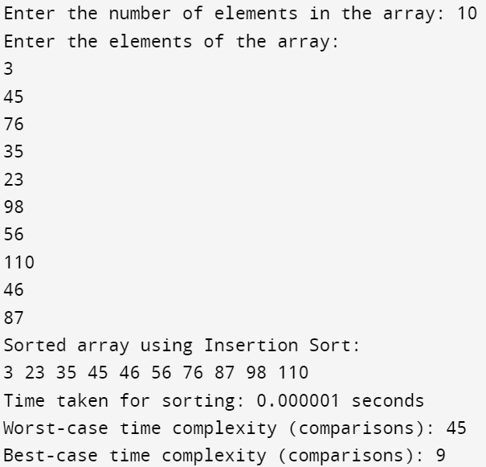

#include<stdio.h>
#include<time.h>
void insertionSort(int arr[], int n) {
for (int i = 1; i < n; i++) {
int key = arr[i];
int j = i - 1;
while (j >= 0 && arr[j] > key) {
arr[j + 1] = arr[j];
j--;
}
arr[j + 1] = key;
}
}
int main() {
int n;
printf("Enter the number of elements in the array: ");
scanf("%d", &n);
int arr[n];
printf("Enter the elements of the array:\n");
for (int i = 0; i < n; i++) {
scanf("%d", &arr[i]);
}
clock_t start_time, end_time;
start_time = clock();
insertionSort(arr, n);
end_time = clock();
printf("Sorted array using Insertion Sort:\n");
for (int i = 0; i < n; i++) {
printf("%d ", arr[i]);
}
double execution_time = (double)(end_time - start_time) / CLOCKS_PER_SEC;
printf("\nTime taken for sorting: %f seconds\n", execution_time);
// Worst-case comparisons (n*(n-1)/2)
int worst_case_comparisons = (n * (n - 1)) / 2;
printf("Worst-case time complexity (comparisons): %d\n", worst_case_comparisons);
// Best-case comparisons (n-1)
int best_case_comparisons = n - 1;
printf("Best-case time complexity (comparisons): %d\n", best_case_comparisons);
return 0;
}
Output:
